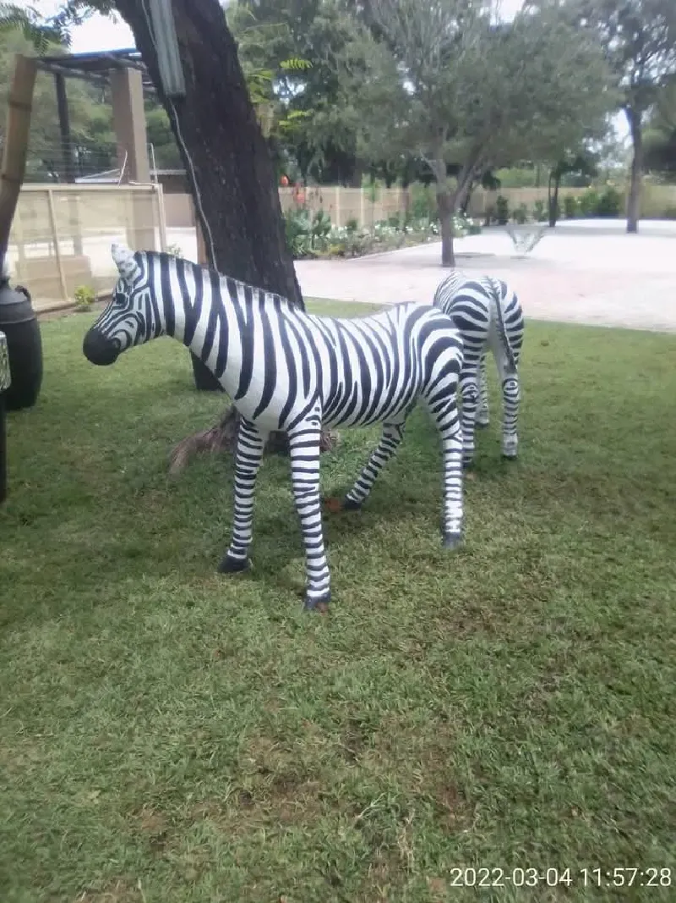

About Moofar Pty Ltd
Transforming outdoor spaces across Francistown with passion, expertise, and sustainable practices since 2025.
Our Story
Founded in September 2025, Moofar Proprietary Limited has quickly established itself as Francistown's premier landscaping service provider. Our journey began with a simple vision: to beautify Botswana, one garden at a time.
Under the leadership of Director Mooketsi Mapugwa and Manager Farai Madorobo, we've built a reputation for excellence, innovation, and unwavering commitment to client satisfaction.
We understand Francistown's climate and terrain, and leverage this local expertise to deliver landscaping solutions that are visually stunning and sustainable.

Our Mission
Our mission is to transform outdoor spaces into havens of beauty, functionality, and sustainability. We strive to exceed expectations by delivering exceptional landscaping services tailored to our clients’ needs.
We believe every outdoor space has untapped potential. Whether it's a residential garden, commercial property, or undeveloped land, we approach each project with creativity, technology, and care.
Our motto: Adventure | Nature | Community — These three pillars guide our design, client relationships, and environmental practices.
Ready to Work With Us?
Experience the Moofar difference. Contact us today for a free consultation and discover how we can transform your outdoor space.
Contact Us WhatsApp Us